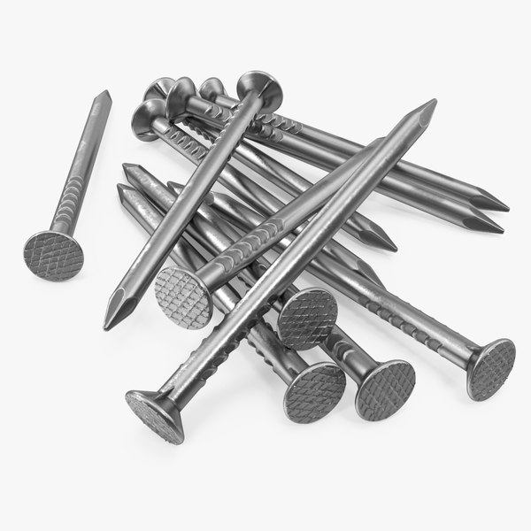

The Basic technics of Metalworking
Forming is the process of re-shaping and fabricating metal objects without adding or removing any material. This process is possible through a combination of heat and pressure. Both forging and bending are essential methods for forming metal. When forging metal, you will heat it in the forge, then hammer and bend it into your desired shape. To make a bend or curve in the metal, heat it in the forge, then hold it over the anvil horn and strike it with a hammer to make your desired curve. The English wheel is a tool that allows metalworkers to easily form and shape cold materials, such as aluminum or steel.
Cutting removes material from metal using milling, routing, turning, and technologies like CNC (computer numerical control) machines. Plasma cutters are gas-powered torches powered by argon and hydrogen gas that will remove material and make holes in metal. Cutting is often used in metalworking fabrication shops, automotive repair, and construction.
Welding
Tools for Welding:
- Welding Gloves
- MIG Welding Pliers
- Speed Square
- Metal Brush


Soldering
Tools for Soldering:
- Soldering Pencil
- Solder Flux
- Soldering Iron
- Soldering Station


| Most Used Metal Work Utensels And Everyday Objects Made From Metal | ||
|
Screw The Federal Group USAA screw and a bolt are similar types of fastener typically made of metal and characterized by a helical ridge, called a male thread. Screws and bolts are used to fasten materials by the engagement of the screw thread with a similar female thread in the matching part. |
Wire Global SpecA wire is a single usually cylindrical, flexible strand or rod of metal. Wires are used to bear mechanical loads or electricity and telecommunications signals. Wire is commonly formed by drawing the metal through a hole in a die or draw plate |

Nail Coading IneeringNails are made by feeding a thick, continuous steel wire into a machine where the wire is gripped between two dies and is cut to the desired length. Sufficient metal to form the head is allowed to protrude from the dies at one end and is then flattened into a head by a blow from a mechanized hammer. |
|
Silverware The Kid Should See ThisSilverware got its name because silver was often used to make flatware. Long after humans evolved past using primitive tools fashioned from bone and stones, they began making more sophisticated utensils from wood, shells, and eventually metal, including bronze, iron, and steel. |

Coin The Spruce CraftsA coin is a small, flat, round piece of metal or plastic used primarily as a medium of exchange or legal tender. They are standardized in weight, and produced in large quantities at a mint in order to facilitate trade. They are most often issued by a government. Coins often have images, numerals, or text on them. |
Car Car And DriverA car is a wheeled motor vehicle used for transportation. Most definitions of cars say that they run primarily on roads, seat one-to-eight people, have four wheels and mainly transport people rather than goods. Cars came into global use during the 20th century, and developed economies depend on them. |